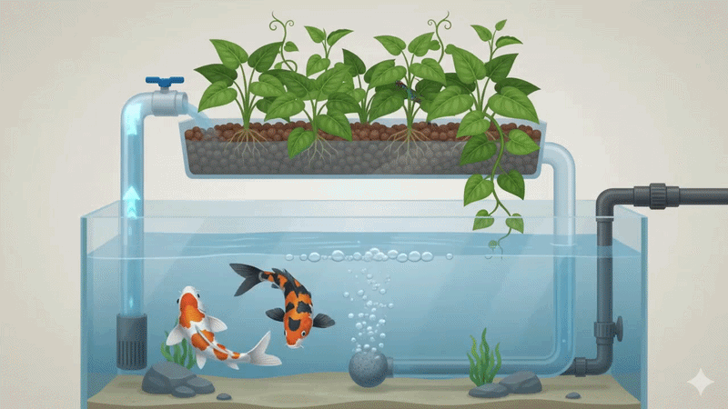
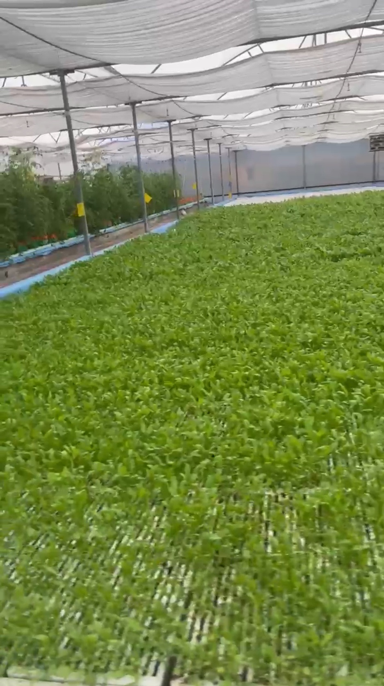
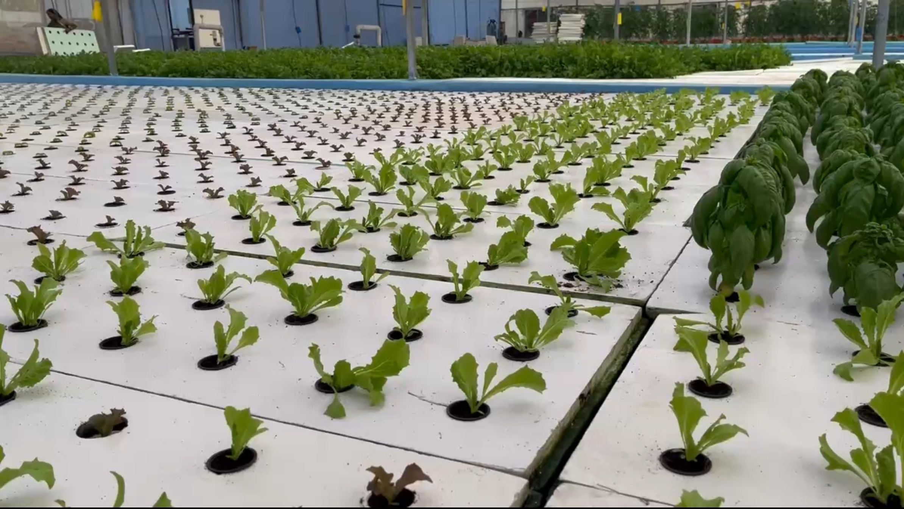
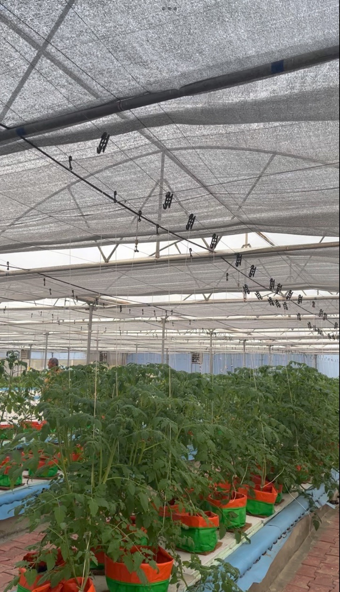
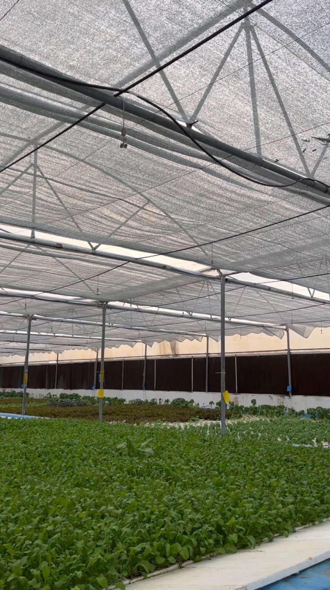

A Farming Platform for Fresher, Cleaner, More Nutritious Food
Zyqua Greens is an agri-tech company. We design and run iAVS — Integrated AquaVegeculture Systems — closed, soil-less farms where fish and plants grow together in one water cycle. It's a cleaner, more space- and water-efficient way to farm, and it lets us grow things you won't easily find pesticide-free or contamination-free anywhere else.
We're not a single-product company. We're a farming platform — and what you see in our product range is everything that platform currently grows.

Science, Sustainability, Synergy —
iAVS sits at the intersection of horticulture, aquaculture, and soil ecology, one closed system doing the work of three.
For every kilogram of fish feed, iAVS yields approximately 0.75 kg of fish and 7 kg of fruits and vegetables.
Based on our operating 2,000 sqm commercial iAVS farm — the annual impact:
Meaningfully reduced CO2 emissions from fewer external inputs and shorter supply chains.



Resource Efficiency
Maximizing output while minimizing water, land, and input use
Zero Discharge
No chemical run-off

Circular Ecosystem
Nutrients and water entirely recycled into a self-sustaining system
Climate Resilient
Year-round production

Healthy Food & Planet
Safe, fresh, organic nutritious food while protecting the environment